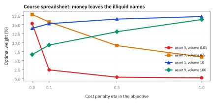
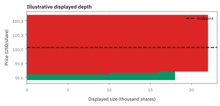
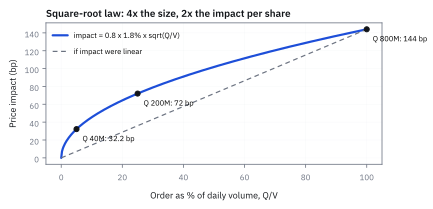
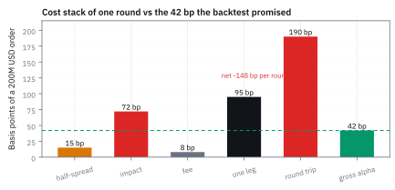

18.5 Market Microstructure
ราคา midpoint ไม่ใช่ราคาที่ทุกขนาดคำสั่งเทรดได้
พอร์ต 200 ล้านดอลลาร์ ซื้อหุ้นราคา \$50 (midpoint \$50.00, ask \$50.075, midpoint หลังจบ \$50.36, ค่าธรรมเนียม 8 bp) อัลฟาคาดหวัง 42 bp ต่อรอบ ต้นทุนไมโครสตรักเจอร์ไปกลับเป็นเท่าใด และกลยุทธ์นี้กำไรจริงหรือไม่?
เฉลย: ต้นทุนไปกลับสูงถึง 190 bp (3,800,000 ดอลลาร์) ประกอบด้วย effective half-spread 15 bp, price impact 72 bp และค่าธรรมเนียม 8 bp ขาดทุนสุทธิ 2,960,000 ดอลลาร์ต่อรอบ หากเทรด 50 รอบต่อปี พอร์ตจะขาดทุนจริง -74% แทนที่จะได้ +21% ตาม backtest และต้องถือยาวอย่างน้อย 22.6 วันจึงจะคุ้มทุน
ศัพท์ที่ใช้ในหัวข้อนี้
- order book
- รายการ limit orders ที่รอซื้อและขายเรียงตามราคาและ size ใช้อ่าน liquidity ที่แสดงอยู่ก่อนเลือก market order หรือ limit order
- bid-ask spread
- ส่วนต่างระหว่างราคาซื้อดีที่สุดกับราคาขายดีที่สุด ใช้วัดต้นทุนทันทีของการข้ามตลาดสำหรับ order ขนาดเล็ก
- midpoint
- ค่าเฉลี่ยของ best bid และ best ask ใช้เป็น benchmark กลางสำหรับ mark และ transaction-cost analysis แต่ไม่รับประกัน executable price
- price impact
- การเปลี่ยนราคาอันเกิดจากหรือสัมพันธ์กับ order ของเรา ใช้ประมาณต้นทุนที่เพิ่มตาม participation และกำหนดวิธีแบ่ง order
- limit order
- คำสั่งซื้อหรือขายที่กำหนดราคาสูงสุดหรือต่ำสุดและรอจับคู่ ใช้ควบคุมราคาแลกกับความไม่แน่นอนของ fill
- market order
- คำสั่งที่ยอมข้าม spread เพื่อจับคู่ทันทีตาม liquidity ที่มี ใช้เมื่อความเร่งด่วนสำคัญกว่าราคาที่แน่นอน
- slippage
- ส่วนต่างระหว่าง benchmark price กับราคา fill ที่เกิดจริง ใช้วัดต้นทุน execution
- transaction-cost analysis (TCA)
- การแยกและวัดต้นทุน execution เทียบ benchmark ใช้ตรวจ broker, algorithm และ market impact
- notional
- มูลค่าตามราคาอ้างอิงของจำนวน shares ที่ trade ใช้แปลง per-share cost เป็น USD exposure
- effective half-spread
- ส่วนต่างระหว่างราคาซื้อขายจริงกับ midpoint ขณะส่งคำสั่ง ใช้ประเมินต้นทุน execution จริงที่ผู้ส่งคำสั่งจ่ายให้ผู้ดูแลสภาพคล่อง
- realized half-spread
- ส่วนต่างระหว่างราคาซื้อขายกับ midpoint ในอนาคตหลังคำสั่งจบลง ใช้ประเมินกำไรสุทธิของผู้ดูแลสภาพคล่องหลังจากหักผลกระทบราคา
- adverse selection
- ความเสี่ยงที่คำสั่งซื้อขายจับคู่กับผู้มีข้อมูลเชิงลึก ใช้ตรวจวัดการสูญเสียเปรียบของผู้ตั้งราคาเมื่อ realized spread ติดลบ
- volume-weighted average price (VWAP)
- ราคาเฉลี่ยของทั้งวันที่ถ่วงด้วยปริมาณซื้อขาย ใช้เป็นเป้าของการทยอยส่งคำสั่ง และเป็น benchmark ว่าเราซื้อได้แพงหรือถูกกว่าตลาดทั้งวัน
- time-weighted average price (TWAP)
- ราคาเฉลี่ยที่ถ่วงเวลาเท่ากันทุกช่วง ใช้แบ่งคำสั่งเป็นชิ้นเท่า ๆ กันตามเวลา เมื่อไม่อยากพึ่งการคาดปริมาณซื้อขาย
- dark pool
- ศูนย์ซื้อขายหลักทรัพย์นอกตลาดหลักที่ไม่แสดงคำสั่งซื้อขายล่วงหน้า ใช้ลดผลกระทบราคาสำหรับคำสั่งขนาดใหญ่โดยแลกกับความเสี่ยงที่ไม่ได้รับการจับคู่
สัญลักษณ์ที่ใช้ในหัวข้อนี้
| สัญลักษณ์ | ความหมาย | หน่วย |
|---|---|---|
| $b$ | ราคาสูงสุดที่มีคนพร้อมรับซื้ออยู่ | USD/share |
| $a$ | ราคาต่ำสุดที่มีคนพร้อมขายอยู่ | USD/share |
| $m$ | จุดกึ่งกลางของสองราคาข้างบน ซึ่งไม่มีใครซื้อขายได้จริงที่ราคานี้ | USD/share |
| $Q$ | order size | shares |
| $V$ | volume ที่ใช้เป็น benchmark ใน horizon เดียวกัน | shares |
| $\sigma$ | volatility ใน horizon ของ impact model | dimensionless |
| $I$ | estimated impact | fraction of price |
ที่มาที่ไป: ราคาบนหน้าจอ ไม่ใช่ราคาที่เทรดได้
ทุกอย่างในบทก่อน ๆ สมมติว่าซื้อขายได้ที่ราคาเดียวโดยไม่มีต้นทุน ซึ่งเป็นสมมติฐานที่สะดวก แต่ผิดในทางที่แพงมาก
Harold Demsetz ชี้ให้เห็นตั้งแต่ปี 1968 ว่าส่วนต่างระหว่างราคาซื้อกับราคาขายไม่ใช่ความไม่สมบูรณ์ของตลาด แต่เป็นค่าตอบแทนของคนที่ยอมพร้อมซื้อขายตลอดเวลา
ต่อมาในทศวรรษ 1980 งานของ Albert Kyle และของ Lawrence Glosten กับ Paul Milgrom อธิบายเพิ่มว่าส่วนต่างนั้นสะท้อนความเสี่ยงที่คู่ค้าจะรู้มากกว่าเราด้วย
สำหรับกลยุทธ์ที่ซื้อขายบ่อย ต้นทุนส่วนนี้มักกินกำไรที่คำนวณไว้เกินครึ่ง และเป็นสาเหตุอันดับหนึ่งที่กลยุทธ์ที่ดูดีใน backtest ขาดทุนจริง
เริ่มจากราคา executable ไม่ใช่ราคาใน chart
ให้ best bid เป็น 100.00 USD/share และ best ask เป็น 100.04 USD/share สำหรับ buy order 50,000 shares หาก fill ทั้งหมดที่ best ask ต้นทุนจาก midpoint เป็น 2 cents ต่อ share หรือ 1,000 USD ก่อน fee แต่ depth อาจไม่พอ midpoint เป็นเหมือนรูปอาหารในเมนู: ดูดีและอยู่ตรงกลาง แต่ไม่ได้บอกว่าจานจริงเหลือเท่าไร
ขั้นที่ 1 — ลองด้วยมือ: คำสั่ง 50,000 หุ้นกินทีละชั้น
ก่อนสูตร ลองไล่ order book ด้วยมือ: มีของวางขายกี่หุ้นที่แต่ละราคา แล้วคำสั่ง 50,000 หุ้นได้ราคาเฉลี่ยเท่าไร
ป้ายบอก 100.04 แต่มีของแค่ 10,000 หุ้นที่ราคานั้น คำสั่ง 50,000 ต้องกินชั้นถัดไปที่ 100.05 และ 100.06 ราคาเฉลี่ยที่ได้จริงคือ 100.053 ไม่ใช่ 100.04 และไม่ใช่ 100.02
เทียบกับ midpoint เสียไป 3.3 เซนต์ต่อหุ้น คือ 1,650 USD ครึ่ง spread (2 เซนต์) อธิบายได้แค่ 1,000 อีก 650 มาจากการกินชั้นลึกลงไป นี่คือความหมายที่จับต้องได้ของคำว่า depth และ impact
ถ้าสั่ง 10,000 หุ้นจะจ่ายแค่ 2 เซนต์ต่อหุ้น สั่ง 50,000 จ่าย 3.3 เซนต์ ต้นทุนต่อหุ้นโตตามขนาด นี่คือสิ่งที่สูตรรากที่สองในขั้นที่ 3 พยายามจับ
ก้อนแรกคือคำสั่งขายที่รออยู่สามชั้น ชั้นละราคา คำสั่งซื้อห้าหมื่นหุ้นจึงต้องกินขึ้นไปทีละชั้น
ก้อนที่สองคือเงินที่จ่ายจริงรวมทุกชั้น
ก้อนที่สามคือราคาเฉลี่ยที่ได้จริง $\bar P$ เทียบกับราคากลางที่ 100.02 ส่วนต่างคูณจำนวนหุ้นคือต้นทุนที่จ่ายเกินราคากลาง ซึ่งไม่ปรากฏในค่าธรรมเนียมเลย
ขั้นที่ 2 — half-spread cost
ราคากลางที่เห็นบนจอไม่ใช่ราคาที่เทรดได้ ต้นทุนขั้นต่ำคือครึ่งหนึ่งของส่วนต่างราคาซื้อขาย แม้จะส่งคำสั่งเล็กที่สุดก็ตาม
$a-m$ คือครึ่งหนึ่งของ spread หน่วยเป็น USD ต่อหุ้น คูณจำนวนหุ้นจึงได้เป็น USD ผู้ซื้อที่เคาะ ask จ่ายเกินราคากลางเท่านี้ทุกหุ้น ไม่ว่าคำสั่งจะเล็กแค่ไหน
1,000 USD นี้ถูกเฉพาะเมื่อได้ของครบที่ best ask ขั้นที่ 1 แสดงแล้วว่าคำสั่ง 50,000 หุ้นต้องกินลึกไปอีกสองชั้น ต้นทุนจริงจึงเป็น 1,650
ขั้นที่ 3 — นิยามของแบบจำลองผลกระทบจากคำสั่ง และเหตุผลที่มันเป็นแค่สมมติฐาน
บรรทัดนี้เป็น แบบจำลองที่เรากำหนดขึ้น ไม่ใช่กฎธรรมชาติ และไม่ได้พิสูจน์มาจากอะไร รูปรากที่สองถูกเลือกเพราะมันพอดีกับข้อมูลจริงหลายตลาดพอสมควร ไม่ใช่เพราะทฤษฎีบังคับ อ่านหน่วยให้ตรง: สัดส่วนของปริมาณต่อสภาพคล่องไม่มีหน่วย และความเหวี่ยงต้องใช้ช่วงเวลาเดียวกับ ที่วัดสภาพคล่อง ผลที่ได้จึงเป็นสัดส่วนของราคา ไม่ใช่จำนวนเงิน ตัวคูณข้างหน้าต้องประมาณจากข้อมูลของตลาดนั้นเอง และเปลี่ยนไปตามภาวะตลาด
รูปรากที่สองเป็นแบบจำลองที่ตั้งให้ตรงกับข้อมูลคร่าว ๆ คำสั่งใหญ่ขึ้นสี่เท่า impact ต่อหุ้นโตแค่สองเท่า เพราะคำสั่งใหญ่มักถูกซอยส่งนานขึ้น ตลาดจึงมีเวลาเติมของกลับมา
$Y$ ไม่มีหน่วย $\sigma$ ต้องวัดในช่วงเวลาเดียวกับปริมาณซื้อขาย $V$ และ $Q/V$ ไม่มีหน่วย ผลจึงเป็นสัดส่วนของราคา
ขั้นที่ 4 — ตัวอย่าง participation
แทนตัวเลขจริง เพื่อดูว่าถ้าเราเป็นสัดส่วนหนึ่งของปริมาณซื้อขายทั้งวัน จะจ่ายเพิ่มเท่าไร
คำสั่งเท่ากับ 1% ของปริมาณซื้อขาย และ volatility 2% ได้ impact 20 bp หรือ 0.20% ของราคา ตัวเลขชุดนี้เป็นสมมติฐานเพื่อสอน ไม่ใช่ค่าที่วัดจากตลาด
แปลงเป็นเงิน: 20 bp ของ notional $100.02\times50{,}000=5{,}001{,}000$ USD คือ $0.002\times5{,}001{,}000=10{,}002$ USD คือ 20 เซนต์ต่อหุ้น ใหญ่กว่าครึ่ง spread สิบเท่า ทำไมรากที่สอง: สั่งใหญ่สี่เท่าจ่ายต่อหุ้นสองเท่า สอดคล้องกับที่ ladder ในขั้นที่ 1 ต้องกินชั้นลึกขึ้นเรื่อย ๆ
สไลด์วัดสภาพคล่องสองทาง: นับปริมาณ หรือคิดเป็นต้นทุน
สไลด์เรียกหุ้นว่าสภาพคล่องดีเมื่อผ่านสามข้อ ส่งคำสั่งแล้วได้ของเร็ว ราคาขยับน้อยตอนเราเทรด และ order book ลึกพอให้เทรดก้อนใหญ่ ลองวัดหุ้นในขั้นที่ 1 โดยสมมติว่าวันนี้ซื้อขาย 2,000,000 หุ้น จากหุ้นทั้งหมด 500,000,000 หุ้น
ทางแรกนับปริมาณ turnover คือสัดส่วนของหุ้นทั้งหมดที่เปลี่ยนมือในหนึ่งวัน ยิ่งสูงยิ่งหาคู่ค้าง่าย แต่ไม่บอกว่าคำสั่งของเราจะเสียเท่าไร
ทางที่สองคิดเป็นต้นทุน ได้แก่ spread เป็นเปอร์เซ็นต์ของราคา VWAP ที่ใช้เป็นเกณฑ์เทียบราคาที่ได้ impact function ของ Loeb ซึ่งเป็นตารางต้นทุนตามขนาดคำสั่ง และแบบจำลองของ Kissel กับ Glantz ในขั้นถัดไป คำสั่ง 2.5% ของปริมาณทั้งวันเสีย 3.3 bp จากราคากลาง มากกว่าครึ่ง spread ที่ 2 bp
แถวสุดท้ายคือสมมติฐานของสไลด์ ต้นทุนของพอร์ตเท่ากับผลรวมของต้นทุนหุ้นแต่ละตัว ซึ่งละเลยว่าการเทรดหุ้นตัวหนึ่งดันราคาตัวอื่นด้วย หัวข้อ 18.6 กลับมาเรื่องนี้ตอนย้ายทั้งพอร์ต
ขั้นที่ 5 — Kissel-Glantz Model: การแยกชิ้นส่วน Spread และ Nonlinear Market Impact
แบบจำลอง Kissel-Glantz รวมทั้งผลกระทบชั่วคราวและผลกระทบถาวร ช่วยให้ผู้จัดการกองทุนสามารถประเมิน slippage ที่แท้จริงก่อนส่งคำสั่งขนาดใหญ่เข้าสู่ตลาด
สไลด์ให้รูปแรก ต้นทุนเป็นสัดส่วนของมูลค่าที่เทรด คือราคาคูณจำนวนหุ้น ก้อน impact โตตามขนาดเทียบปริมาณต่อวันกำลัง $a_4$ และคูณ volatility coefficient ทั้งสี่หาได้ด้วย regression ของต้นทุนที่เกิดจริงต่อมูลค่า ตามแถวที่สอง
ไฟล์ Excel ของคอร์สใช้รูปที่สามโดยตั้ง $\alpha_1=0.0035$, $\beta=0.65$, $\alpha_2=0.3$, $\alpha_3=0.0015$ หน่วยของขนาดคือจุดของน้ำหนักพอร์ต
แบบจำลองของ Kissel และ Glantz แยกต้นทุนการเทรดออกเป็นสองส่วนชัดเจน ส่วนแรกคือต้นทุนคงที่บวกค่า spread ที่ขยายตัวตามความผันผวนของราคา และส่วนที่สองคือ market impact ที่ไม่เป็นเส้นตรง
บรรทัดที่สองส่วนด้วยจำนวนหุ้น $Q$ เผยให้เห็นต้นทุนต่อหุ้น พจน์ผลกระทบราคาจะขึ้นอยู่กับสัดส่วนของคำสั่งเทียบกับปริมาณซื้อขายเฉลี่ยต่อวัน $V$ ยกกำลัง $\beta$ ซึ่งงานวิจัยเชิงประจักษ์มักได้ค่าราว 0.65
หุ้นตัวที่ 1 ในไฟล์ ผันผวน 5.145% ปริมาณซื้อขาย 10 ถ้าเทรด 10 จุด เสียค่า spread และค่าธรรมเนียม 0.169 ส่วนหุ้นตัวที่ 4 ที่ปริมาณเพียง 0.1 ผลลัพธ์ของไฟล์ซื้อเพิ่ม 17.25 จุด เสียถึง 34.55 เกินครึ่งของต้นทุนทั้งพอร์ต 67.43 เพราะ impact ไม่เป็นเส้นตรง
แต่ส่วนที่หนักกว่าคือต้นทุน impact จากการผลักราคา ซึ่งกินเงินไปถึง 0.698 หน่วย ทำให้ต้นทุนรวมพุ่งขึ้นเป็น 0.868 ดอลลาร์ ชี้ชัดว่าคำสั่งขนาดใหญ่จะถูกลงโทษอย่างรุนแรงจากความไม่เป็นเส้นตรง
ขั้นที่ 6 — Roll Model: การแกะ Effective Spread จาก Serial Covariance ของราคา
สูตรคำนวณของ Roll ช่วยให้วิเคราะห์ย้อนหลังเพื่อประเมินสภาพคล่องในอดีตได้ แม้ข้อมูลในอดีตจะมีเพียงราคาปิดโดยไม่มีข้อมูล order book ระดับ microstructure
หากเรามีเพียงราคาปิดแต่ไม่มีข้อมูล bid-ask spread ของตลาด Richard Roll เสนอวิธีแกะต้นทุนแฝงนี้จากการดีดไปมาของราคาซื้อขายหรือ bid-ask bounce
สมมติให้ราคาซื้อขายแกว่งรอบมูลค่าพื้นฐาน $m_t$ ด้วยครึ่งหนึ่งของ spread คือ $s$ โดย $q_t$ เป็นเครื่องหมายบวกเมื่อเป็นคำสั่งซื้อ และเป็นลบเมื่อเป็นคำสั่งขาย
เมื่อคำนวณ covariance ระหว่างการเปลี่ยนแปลงราคาของสองงวดติดกัน พจน์สุ่ม $u_t$ จะตัดกันหมด เหลือเพียงพจน์ $-s^2$ เพราะการซื้อที่ ask ในงวดก่อน มักจะตามด้วยการขายที่ bid ในงวดถัดไปเสมอ
เครื่องหมายลบของ covariance จึงยืนยันการเด้งกลับของราคา หากคำนวณได้ลบ 0.0004 เราจะถอดรูทได้ครึ่ง spread เท่ากับ 2 เซนต์ และได้ spread รวมของตลาดเท่ากับ 4 เซนต์ทันที
ขั้นที่ 7 — การแยกชิ้นส่วน Microstructure: Effective, Realized Half-Spread และ Adverse Selection
คำนวณการแยกองค์ประกอบต้นทุนการเทรดจากการซื้อที่ราคา \$50.075 บนหุ้นราคา \$50 ที่มีราคากลางก่อนส่งคำสั่ง \$50.00 และราคากลางหลังจบคำสั่ง \$50.36
$h_{\text{eff}}$ คือ effective half-spread, $I$ คือ price impact และ $h_{\text{real}}$ คือ realized half-spread ทุกตัววัดเทียบ midpoint ก่อนส่งคำสั่ง 50.00
Effective half-spread 15 bp คือต้นทุนจริงที่เราจ่ายออกจากกระเป๋าขณะกดคำสั่งซื้อเทียบกับราคากลางก่อนส่งคำสั่ง
Price impact 72 bp วัดว่าคำสั่งซื้อขนาดใหญ่ของเราผลักราคากลางของตลาดให้ขยับขึ้นไปเท่าใด ซึ่งคำนวณจาก square-root law ของขนาดคำสั่งเทียบกับปริมาณซื้อขาย
Realized half-spread ติดลบ 57 bp สะท้อนว่าผู้ดูแลสภาพคล่องที่ขายหุ้นให้เราขาดทุนสุทธิหลังราคาตลาดวิ่งขึ้นไป นี่คือหลักฐานเชิงปริมาณของ adverse selection ที่เกิดจากการเทรดกับคำสั่งที่มีข้อมูล
ขั้นที่ 8 — เทียบสองก้อนในหน่วยเดียวกัน: ผลกระทบใหญ่กว่าส่วนต่างราคากี่เท่า
สองขั้นก่อนหน้าคำนวณต้นทุนคนละหน่วย ขั้นนี้แปลงให้เป็นดอลลาร์ทั้งคู่แล้วเทียบกัน เพราะการเทียบหน่วยที่ต่างกันคือที่มาของการประเมินต้นทุนต่ำเกินจริง
คำสั่งขนาดห้าหมื่นหุ้นที่ราคาร้อยดอลลาร์มีมูลค่าห้าล้านดอลลาร์ และคำถามคือค่าใช้จ่ายก้อนใดครอบงำ
$N$ คือมูลค่าคำสั่ง $C_s$ คือต้นทุนจากส่วนต่างราคา $C_I$ คือต้นทุนจากผลกระทบ และ $I^*$ คือระดับ impact ที่ทำให้สองก้อนเท่ากัน
ค่าใช้จ่ายจากส่วนต่างราคาคิดจากครึ่งหนึ่งของส่วนต่างคูณจำนวนหุ้น ได้หนึ่งพันดอลลาร์ ก้อนนี้จ่ายทุกคำสั่งไม่ว่าจะเล็กหรือใหญ่ และโตเป็นเส้นตรงตามขนาด
ค่าใช้จ่ายจากผลกระทบคิดเป็นสัดส่วนของมูลค่าคำสั่ง จากค่าร้อยละหนึ่งของปริมาณซื้อขายต่อวัน ได้ยี่สิบเบซิสพอยต์ คูณมูลค่าคำสั่งแล้วเป็นหนึ่งหมื่นดอลลาร์
เทียบกันแล้วผลกระทบใหญ่เป็นสิบเท่าของส่วนต่างราคา และคำตอบนี้เปลี่ยนวิธีทำงาน: การเจรจาต่อรองราคาที่ดีขึ้นหนึ่งสตางค์ช่วยได้ไม่มาก เทียบกับการแบ่งคำสั่งออกเป็นหลายวัน
บรรทัดสุดท้ายหาจุดที่สองก้อนเท่ากัน แก้สมการได้ที่อัตราการมีส่วนร่วมหนึ่งในหมื่น หรือห้าร้อยหุ้นจากปริมาณห้าล้านหุ้นต่อวัน ซึ่งเล็กมากจนพูดได้ว่าคำสั่งจริงทุกคำสั่ง มีผลกระทบเป็นต้นทุนก้อนหลัก
ขั้นที่ 9 — ต้นทุนขาเดียวและไปกลับของคำสั่ง 200 ล้าน USD
กลยุทธ์ถือหุ้น 5 วันต่อรอบ ได้ 0.42% ต่อรอบก่อนต้นทุน ปรับ 50 รอบต่อปี คำสั่งละ 200 ล้าน USD ที่ราคา 50.00 หรือ 4 ล้านหุ้น หุ้นนี้ซื้อขายวันละ 800 ล้าน USD ผันผวน 1.8% ต่อวัน bid 49.925 ask 50.075 ค่าธรรมเนียมขาละ 0.08%
ตัวคูณ 0.8 ของกฎรากที่สองไม่มีทฤษฎีบอก ต้องวัดจากข้อมูลของตลาดนั้น ช่วงที่พบบ่อยคือ 0.5 ถึง 1.0 คำสั่งกินปริมาณทั้งวันไป 25% ดัน midpoint จาก 50.00 ไป 50.36 ซึ่งคือตัวเลขที่ขั้นที่ 7 ใช้
$c_1$ คือต้นทุนขาซื้อ $c_2$ คือไปกลับ เพราะตอนขายออกต้องจ่ายทุกก้อนซ้ำ การขายก้อนใหญ่ดันราคาลงเหมือนที่ตอนซื้อดันขึ้น ราคาที่ขึ้นไป 0.72% ตอนซื้อจึงไม่ใช่กำไรที่เก็บได้ $G$ คือกำไรก่อนต้นทุน $C$ คือต้นทุนไปกลับ สุทธิขาดทุนเกือบสามล้านต่อรอบ
ขั้นที่ 10 — ทั้งปี: กระดาษ +21% ของจริง −74%
ต่อตัวเลขของขั้นที่ 9 ให้ครบ 50 รอบ แล้วตรวจกลับด้วยมูลค่าที่เทรดทั้งปี
backtest รายงาน +21% ต่อปี และ Sharpe ราว 1.8 แต่ต้นทุนทั้งปีเท่ากับ 95% ของพอร์ต พอร์ต 200 ล้านเหลือ 52 ล้านภายในปีเดียว
ตรวจกลับ ไปกลับ 50 ครั้งคือหมุนเงิน 100 รอบ เทรดรวม 20,000 ล้าน ต้นทุน 190 ล้านหารแล้วได้ 0.95% ตรงกับต้นทุนขาเดียวพอดี วิธีตรวจ backtest ทุกอันในสามวินาทีคือ เอาการหมุนพอร์ตต่อปีคูณต้นทุนไปกลับ แล้วเทียบกับผลตอบแทนที่อ้าง
ขั้นที่ 11 — ทางแก้ และพื้นที่ที่แก้ไม่ได้
ลองแก้ทีละทาง คือลดขนาดคำสั่ง ถือนานขึ้น และถามว่าถ้าคำสั่งเล็กจนไม่มี impact เลย ยังเหลือต้นทุนเท่าไร
$I_{40}$ คือ impact เมื่อคำสั่งเหลือ 40 ล้าน หรือ 5% ของปริมาณทั้งวัน impact ลดจาก 72 เหลือ 32 bp แต่ยังขาดทุน $g_{25}$ คือกำไรต่อรอบเมื่อถือ 25 วัน ถือ 25 วันแทน 5 วัน กำไรต่อรอบโตห้าเท่าและเทรดแค่ 10 รอบ เหลือ +2% ต่อปี รอดแต่บาง ต้นทุนกินกำไรไป 90%
ทยอยส่งตลอดวันให้ได้ราคาใกล้ volume-weighted average price (VWAP) หรือ time-weighted average price (TWAP) ลด impact ได้ราว 40 ถึง 60% แต่รับความเสี่ยงว่าราคาวิ่งหนีระหว่างรอ
ใช้ limit order แทน market order ประหยัด half-spread ขาละ 15 bp แต่คำสั่งที่ได้จับคู่มักเป็นตอนที่ราคาวิ่งสวนเรา ซึ่งคือ adverse selection อีกรูปหนึ่ง
$c_{\min}$ คือพื้นที่แก้ไม่ได้ ต่อให้คำสั่งเล็กจนไม่มี impact ก็ยังเสียส่วนต่างราคากับค่าธรรมเนียมไปกลับ 46 bp มากกว่ากำไร 42 bp กลยุทธ์ 5 วันนี้ตายตั้งแต่ต้น ที่ขนาดเดิมต้องถืออย่างน้อย $H^*=22.6$ วันจึงเสมอตัว เพราะกำไรวันละ 0.084% กลยุทธ์ความถี่สูงจึงเป็นของคนที่เป็นผู้ตั้งราคา ไม่ใช่ผู้กินราคา
ขั้นที่ 12 — เอาต้นทุนเข้าไปในการเลือกพอร์ตตั้งแต่ต้น
สไลด์บอกว่ามีสองทาง เลือกพอร์ตก่อนแล้วค่อยส่งคำสั่งให้ถูก หรือใส่สภาพคล่องเข้าไปในการเลือกพอร์ตเลย และแนะนำให้ทำทั้งสองอย่าง ไฟล์ Excel ของคอร์สทำแบบที่สองกับหุ้น 10 ตัว เริ่มถือตัวละ 10 จุด
$y$ คือพอร์ตเดิม $x$ คือพอร์ตใหม่ และ $C(x,y)$ คือต้นทุน Kissel-Glantz ของการย้ายจาก $y$ ไป $x$ ไฟล์ใช้ $\lambda=10$ กับ variance เต็มตัวไม่หารสอง และน้ำหนักต้นทุน 0.1 ผลคือขายหุ้นตัวที่ 2, 8 และ 10 ทิ้งหมด ซื้อตัวที่ 4 เพิ่มเป็น 27.25 ต้นทุนรวม 67.43 และค่าเป้าหมาย 602.09
ไฟล์อีกแผ่นเปลี่ยนน้ำหนักต้นทุนจาก 0 เป็น 0.1, 0.5 และ 1.0 หุ้นตัวที่ 3 ที่สภาพคล่องต่ำสุดดูดีบนกระดาษเพราะผลตอบแทนคาด 6.75% ถูกเลือก 15.29% เมื่อไม่คิดต้นทุน แต่เหลือ 0.16% เมื่อน้ำหนักเป็น 1 เงินย้ายไปหุ้นตัวที่ 9 ที่สภาพคล่องสูงสุด จาก 6.63% เป็น 16.39%
ก้อนล่างคืออีกทางของ Lo, Petrov และ Wierzbicki แปลงสภาพคล่องของแต่ละหุ้นให้อยู่ระหว่างศูนย์ถึงหนึ่ง แล้วบังคับให้สภาพคล่องเฉลี่ยของพอร์ตไม่ต่ำกว่าเกณฑ์ หรือตัดหุ้นที่ต่ำกว่าเกณฑ์ทิ้งไปเลย ที่ใช้ค่าสัมบูรณ์เพราะไม่ให้การ short หุ้นสภาพคล่องต่ำตัวหนึ่ง ไปหักล้างกับการถือหุ้นสภาพคล่องต่ำอีกตัว
Figure 18.5d — ใส่ต้นทุนแล้ว เงินย้ายออกจากหุ้นสภาพคล่องต่ำ

น้ำหนักที่ดีที่สุดจากไฟล์ Excel ของคอร์ส เมื่อน้ำหนักต้นทุนเพิ่มจาก 0 ถึง 1 หุ้นตัวที่ 3 ที่ซื้อขายวันละ 0.01 หายจาก 15.29% เหลือ 0.16% ตัวที่ 7 ลดจาก 17.80% เหลือ 5.96% ส่วนตัวที่ 9 ที่ซื้อขายวันละ 100 เพิ่มจาก 6.63% เป็น 16.39%
ที่มาที่ไป: จากหลุมประมูล Open Outcry สู่แบบจำลอง Adverse Selection
ในยุคที่ตลาดหลักทรัพย์ยังซื้อขายด้วยเสียงตะโกนในหลุมประมูล (open outcry) ผู้คนเชื่อว่า bid-ask spread เกิดจากต้นทุนการถือครองสินค้า (inventory cost) และค่าธรรมเนียมของผู้ดูแลสภาพคล่องเพียงเท่านั้น
ทว่าในปี ค.ศ. 1985 งานวิจัยของ Pete Kyle และแบบจำลองของ Lawrence Glosten กับ Paul Milgrom ได้พลิกโฉมความเข้าใจด้าน microstructure โดยพิสูจน์ว่าต้นทุนที่แท้จริงเกิดจาก adverse selection นั่นคือความเสี่ยงที่คนวางคำสั่ง limit order ต้องขาดทุนเมื่อเผลอไปเทรดกับผู้เล่นที่มีข้อมูลวงใน (informed trader)
spread จึงไม่ใช่แค่กำไรของผู้ค้า แต่เป็นเบี้ยประกันภัยที่เรียกเก็บจากตลาดเพื่อชดเชยความเสียเปรียบทางข้อมูล ต่อมาเมื่อตลาดเปลี่ยนผ่านสู่ระบบอิเล็กทรอนิกส์ แบบจำลองของ Kissel-Glantz และ Almgren-Chriss จึงกลายมาเป็นเครื่องมือหลักในการวางแผนส่งคำสั่งเทรด
แล้วเอาไปใช้ทำอะไรได้จริงบ้าง
การเข้าใจว่าราคาบนหน้าจอไม่ใช่ราคาที่เทรดได้ เป็นความรู้ที่ประหยัดเงินได้มากที่สุด สไลด์นิยามหลักทรัพย์ที่มีสภาพคล่องว่าเทรดได้เร็ว ราคาขยับน้อย และ order book ลึก วัดได้สองแบบ แบบปริมาณคือ volume และ turnover ซึ่งเท่ากับ volume หารจำนวนหุ้นทั้งหมด แบบต้นทุนคือ percentage spread, VWAP, impact function ของ Loeb และของ Kissel-Glantz
ใช้ประเมินต้นทุนที่แท้จริงของกลยุทธ์ก่อนลงมือ ซึ่งมักกินกำไรที่คำนวณไว้เกินครึ่ง
ใช้ตัดสินว่ากลยุทธ์ที่ซื้อขายบ่อยคุ้มหรือไม่ เพราะยิ่งบ่อยยิ่งจ่ายส่วนต่างบ่อย
ใช้ออกแบบวิธีส่งคำสั่ง เช่นเลือกระหว่างส่งให้ได้ทันทีกับรอให้คนมาชนราคาเรา
Figure 18.5a — Level-2 ladder แบบสมมติ

ladder นี้เป็น order book สมมติ แสดงว่า displayed size กระจายตามราคา; การเห็น 10,000 shares ที่ best ask ไม่ได้พิสูจน์ว่า 50,000 shares จะได้ราคาเดียว
Figure 18.5b — กฎ square-root ของตัวอย่าง 200 ล้าน USD

impact เท่ากับ 0.8 คูณ 1.8% คูณรากที่สองของสัดส่วนคำสั่งต่อปริมาณทั้งวัน คำสั่ง 40, 200 และ 800 ล้าน USD ได้ 32.2, 72 และ 144 bp ขนาดโตสี่เท่า impact ต่อหุ้นโตแค่สองเท่า แต่ต้นทุนเป็นเงินโตแปดเท่า เส้นประคือถ้า impact เป็นเส้นตรง ซึ่งจะประเมินคำสั่งเล็กแพงเกินและคำสั่งกลางถูกเกิน
Figure 18.5c — ต้นทุนหนึ่งรอบเทียบกำไรที่ backtest สัญญา

ขาเดียวเสีย half-spread 15 impact 72 และค่าธรรมเนียม 8 รวม 95 bp ไปกลับ 190 bp ขณะที่กำไรก่อนต้นทุนมีแค่ 42 bp ต่อรอบ สุทธิขาดทุน 148 bp หรือ 2.96 ล้าน USD ต่อรอบ
ตัวอย่างที่สอง — ซื้อแพงกว่า benchmark กี่ USD
คำถาม: คำสั่งซื้อ 50,000 หุ้นมี arrival midpoint 100.02 USD แต่ได้ราคาเฉลี่ย 100.12 USD implementation shortfall เท่าไร?
ของที่มี: ขั้นที่ 1 ถึง 2
1. ส่วนต่างต่อหุ้น 100.12 − 100.02 = 0.10 USD
2. คูณ 50,000 หุ้นได้ 5,000 USD
ตรวจเองใน 10 วินาที: ทุก 1 เซนต์ต่อหุ้นบน 50,000 หุ้นคือ 500 USD 10 เซนต์จึงเป็น 5,000
แปลว่าอะไร: ก่อนเทียบ broker ต้องล็อก benchmark, ฝั่งซื้อขาย, ช่วงเวลาของคำสั่ง และค่าธรรมเนียมให้ตรงกัน ถ้าเปลี่ยนเป็นราคาตอนตัดสินใจ ตัวเลขจะตอบคนละคำถาม
โค้ดตรวจ order book, Kissel-Glantz, Roll, ต้นทุน 190 bp และพอร์ตที่คิดต้นทุน
import numpy as np
paid = 10_000 * 100.04 + 15_000 * 100.05 + 25_000 * 100.06 # walking the book
assert abs(paid - 5_002_650) < 1e-6 and abs(paid / 50_000 - 100.053) < 1e-9
assert abs((paid / 50_000 - 100.02) * 50_000 - 1_650) < 1e-6 and abs(50_000 * 0.02 - 1_000) < 1e-9
assert abs(1 * 0.02 * np.sqrt(0.01) - 0.002) < 1e-12
a1, a2, a3, b = 0.0035, 0.3, 0.0015, 0.65 # Kissel-Glantz, course file
C = lambda dw, V, sig: a1 * (100 / V)**b * abs(dw)**(1 + b) + (a2 * sig / 100 + a3) * abs(dw)
assert abs(C(10, 10, 5.1449) - 0.86772) < 1e-4 and abs(C(17.251347, 0.1, 4.9790) - 34.5466) < 1e-3
assert abs(645.2575 - 10 * 3.642132 - 0.1 * 67.433554 - 602.0928) < 1e-3
assert abs(2 * np.sqrt(0.0004) - 0.04) < 1e-12 # Roll spread
I = 0.8 * 0.018 * np.sqrt(200 / 800) # the 200M USD strategy
leg = 0.0015 + I + 0.0008
assert abs(I - 0.0072) < 1e-12 and abs(2 * leg - 0.019) < 1e-12
assert abs(200e6 * 2 * leg - 3_800_000) < 1e-3 and abs(200e6 * (0.0042 - 2 * leg) + 2_960_000) < 1e-3
assert abs(50 * (0.0042 - 2 * leg) + 0.74) < 1e-12
assert abs((0.0015 + 0.8 * 0.018 * np.sqrt(0.05) + 0.0008) * 2 - 0.01104) < 1e-5
assert abs(10 * (0.021 - 0.019) - 0.02) < 1e-12 and abs(2 * (0.0015 + 0.0008) - 0.0046) < 1e-12
assert abs(0.019 / (0.0042 / 5) - 22.62) < 0.01
assert abs((50.075 - 50.00) / 50 - (50.075 - 50.36) / 50 - 0.0072) < 1e-12 # 15 = -57 + 72
assert abs(2_000_000 / 500_000_000 - 0.004) < 1e-15 # turnover 0.4%
assert round(0.04 / 100.02 * 1e4, 1) == 4.0 and round(0.033 / 100.02 * 1e4, 1) == 3.3 # bpโค้ดตรวจราคาเฉลี่ยจากการกิน order book สามชั้น ต้นทุน Kissel-Glantz ของหุ้นตัวที่ 1 และ 4 ในไฟล์ของคอร์ส ค่าเป้าหมาย 602.09 spread ของ Roll ต้นทุนไปกลับ 190 bp ผลทั้งปี −74% ทางแก้ทั้งสองแบบ พื้นต้นทุน 46 bp และระยะถือขั้นต่ำ 22.6 วัน
คำตอบ — กลยุทธ์ 42 bp ต่อรอบที่ตายเพราะต้นทุน
คำถาม: พอร์ต 200 ล้าน USD ซื้อหุ้นราคา 50 (midpoint 50.00, ask 50.075, midpoint หลังจบ 50.36, ค่าธรรมเนียม 8 bp) กำไรคาดหวัง 42 bp ต่อรอบ ต้นทุนไปกลับเท่าไร และกลยุทธ์นี้กำไรจริงหรือไม่?
ของที่มี: ขั้นที่ 7 ถึง 11
1. ขาเดียวเสีย half-spread 15 bp, impact 72 bp จากคำสั่ง 25% ของปริมาณทั้งวัน และค่าธรรมเนียม 8 bp รวม 95 bp
2. ไปกลับ 190 bp หรือ 3,800,000 USD ต่อรอบ เทียบกำไร 840,000 ขาดทุน 2,960,000 USD
3. ทั้งปี 50 รอบ กระดาษ +21% ของจริง −74% พอร์ตเหลือ 52 ล้าน
4. ต่อให้คำสั่งเล็กจนไม่มี impact ยังเสีย 46 bp มากกว่า 42 bp ต้องถืออย่างน้อย 22.6 วันจึงเสมอตัว
ตรวจเองใน 10 วินาที: 0.8 × 1.8% × 0.5 = 0.72% และ 2 × (0.15% + 0.72% + 0.08%) = 1.90%
แปลว่าอะไร: ก่อนเชื่อ backtest ให้คูณการหมุนพอร์ตต่อปีด้วยต้นทุนไปกลับ ถ้าผลคูณใกล้หรือเกินผลตอบแทนที่อ้าง กลยุทธ์นั้นอยู่ไม่รอด effective, impact และ realized spread ตอบคนละคำถาม คือเราจ่ายเท่าไร เราดันราคาเท่าไร และคนขายให้เราขาดทุนเท่าไร
กับดัก: นับของที่วางโชว์ใน order book เป็นสภาพคล่องที่รับประกัน
ของที่วางโชว์ถูกถอนได้ทันทีที่คำสั่งของเราเริ่มกิน ของที่ซ่อนอยู่ก็อาจมี และคำสั่งของเราเองก็เปลี่ยนคิวกับข้อมูลใน book แบบจำลอง impact จึงต้องปรับตัวเลขใหม่ตามหุ้น ช่วงเวลาของวัน และสภาพตลาด
ตัวเลข spread และปริมาณซื้อขายใน backtest มักเป็นค่าเฉลี่ยของวันปกติ แต่วันที่ตลาดร่วงหนัก ซึ่งมักเป็นวันเดียวกับที่แบบจำลองความเสี่ยงสั่งให้ลดพอร์ต spread กว้างขึ้น 3 ถึง 10 เท่า และความลึกของ book หายไปราว 80%
ลองแทนในขั้นที่ 9 ถ้า spread กว้างขึ้น 5 เท่า ครึ่ง spread 15 bp กลายเป็น 75 bp ถ้าปริมาณที่เทรดได้เหลือหนึ่งในห้า impact ตามรากที่สองโต 2.24 เท่า จาก 72 เป็น 161 bp ขาเดียวรวมค่าธรรมเนียม 8 bp เป็น 244 bp แพงกว่าวันปกติ 2.6 เท่า ในวันที่ต้องขายที่สุด
ข้อจำกัด: วิธีนี้สมมติอะไร และของจริงเป็นอย่างไร
| เรื่อง | วิธีนี้สมมติว่า | ของจริงเป็นอย่างไร | ผลที่ตามมาเวลาใช้งาน |
|---|---|---|---|
| แบบจำลองผลกระทบ | ผลกระทบต่อราคาคำนวณได้ด้วยสูตร | สูตรที่ใช้เป็นเพียงการประมาณ | ค่าที่ประมาณได้ต่างกันมากระหว่างช่วงเวลาและระหว่างหุ้น |
| สภาพคล่องคงที่ | ปริมาณซื้อขายสม่ำเสมอ | หายไปพอดีตอนที่ตลาดผันผวน | ต้นทุนที่ประมาณจากวันปกติต่ำเกินจริงมากในวันที่ต้องรีบออก |
| independence | คำสั่งเราไม่ดึงคำสั่งคนอื่น | ระบบอื่นตรวจจับรูปแบบของเราได้ | ต้นทุนสูงขึ้นเมื่อกลยุทธ์เราถูกจับทาง |
แถวกลางเป็นเหตุผลที่ต้องประมาณต้นทุนแยกสำหรับภาวะปกติกับภาวะตึงตัว
สรุปที่ใช้ได้จริง
- midpoint เป็น benchmark ไม่ใช่ executable guarantee
- half-spread คิดได้จาก $Q(a-m)$ เมื่อ fill ที่ best ask
- impact ต้องระบุ model horizon, volume และ calibration
- เทียบต้นทุนสองก้อนต้องแปลงเป็นหน่วยเดียวกันก่อน: คำสั่ง 50,000 หุ้น มีต้นทุนผลกระทบ \$10,000 เทียบกับส่วนต่างราคา \$1,000 คือสิบเท่า